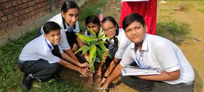
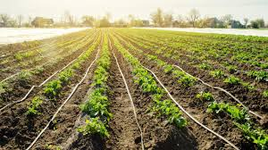
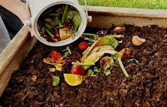
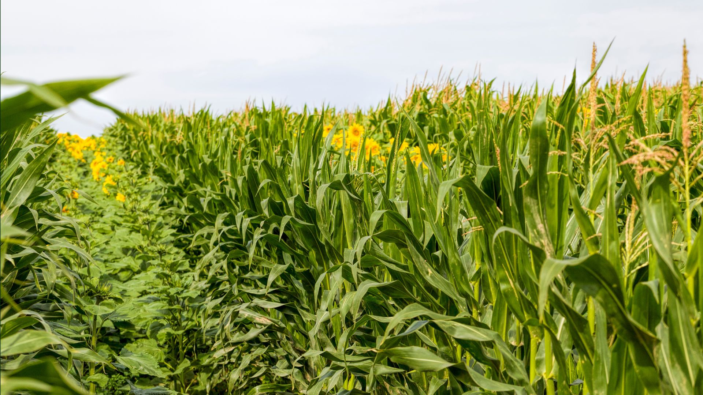

Simple prevention steps

Plant trees/grass
Roots hold soil. Plant on borders.
More info: Agroforestry and planting shelterbelts protect soil from erosion and improve fertility.

Smart irrigation
Use drip/sprinkler; mulch saves water.
More info: Efficient irrigation reduces waterlogging and saves groundwater.

Organic matter
Compost + manure feed soil life.
More info: Using farmyard manure, compost, and green manure increases soil fertility.

Crop rotation
Rotate crops; add legumes.
More info: Rotating cereals with legumes improves soil nitrogen and reduces pests.